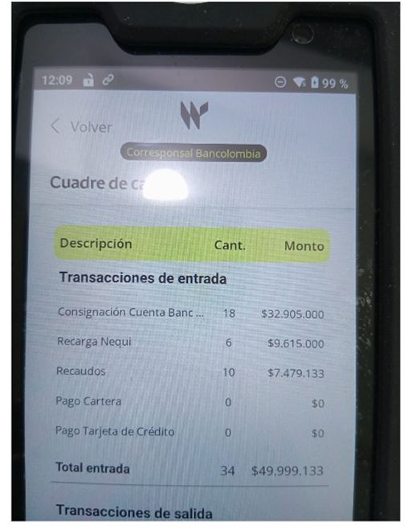
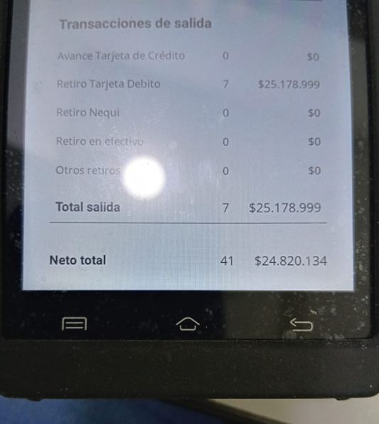

Esta sección corresponde a los reportes que necesita el rol Cajero. Es el mismo reporte que consulta el Admin, ya que ambos ven el mismo cierre diario.
Reproduce el mismo orden y los mismos campos que la tirilla/pantallazo del datáfono, para que se pueda comparar línea por línea. Los "+ Detalles" solo aparecen en las líneas de Terceros y Compensaciones (donde el cajero no tiene visibilidad propia); las líneas de datáfono puro ya coinciden 1 a 1 con lo impreso y no lo necesitan.
Este es el contenido enviado desde el rol Cajero (Cambio 2) para el nuevo formato Wompi, documentado aquí porque es donde vive el Reporte Diario de Caja.
Así se ve el cierre diario que entrega el datáfono Wompi: solo transacciones de entrada y salida, con cantidad y monto (quedan en $0 las que no tuvieron movimiento).


El reporte diario se visualiza en la parte superior igual a lo que el datáfono hoy muestra: Transacciones de entrada y salida y cada bloque con sus totales y el Neto total de ambos bloques. Lo que se busca es que de manera visual el cajero pueda rápidamente comparar que sus movimientos están bien digitados y proceda entonces a realizar su cierre de caja.